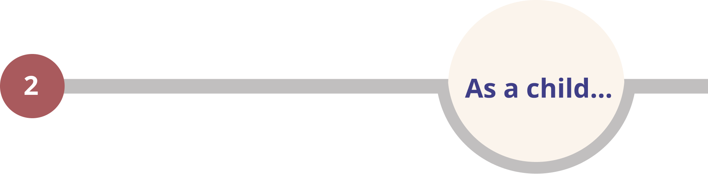
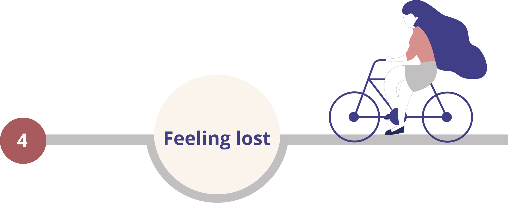

Hi there, I'm Aida - an UX/UI designer with an engineering perspective and a creative research approach. Everyone has their own path that makes them unique. Here is my journey to becoming a designer...
There is a theory that humans are either left-brained or right-brained, meaning that one side of their brain is dominant. If someone is mostly analytical, they’re said to be left-brained. If someone tends to be more visual, they’re thought to be right-brained. I could hardly fit myself into one of the categories. I’ve been always wondering why someone cannot be both left and right brained…
As a child, I loved painting, crafting, and creating something new from waste materials. At the same time, I have always been one of the top students in my school in mathematics and physics.
Life went on and I found myself being more involved in mathematics and physics. My visual and artistic talents were set aside for a while. Everyone including myself believed that I’d found the best way to fully utilize my talents, and I needed to keep following the path of being an engineer. I spent seven years of my life getting my bachelor’s and master’s degrees in electrical engineering. And right after getting my master’s degree, I started working at a combustion system company.
Soon after starting, I felt like something was missing in my life. I thought: “This is not who I am, and this is not who I was planning to be as an engineer.” I wanted to be a problem solver, not just a process follower.

While I was feeling confused, lost, and empty in my life, I became familiar with the design industry after talking with a friend. I started researching it and took a few courses on UX design. I could not believe that a field existed where I could do what I really love to do. A combination of creativity and logic.
I could not be happier being a designer at this moment. I cannot imagine myself being anything else. I am working on a combination of all the areas I am passionate about, including technology, research, imagination, psychology, and logical thinking. I’m sure that my unique experience as an engineer will help me to think, design, and decide based on logic. Besides, my experience as a researcher at school provided me with the opportunity to discover the existing problems in my field of study and find the best solutions through the research process. Thinking about UX from a researcher perspective also allows me to create a holistic picture of the product journey. So, let’s get together and launch a successful product into the market.